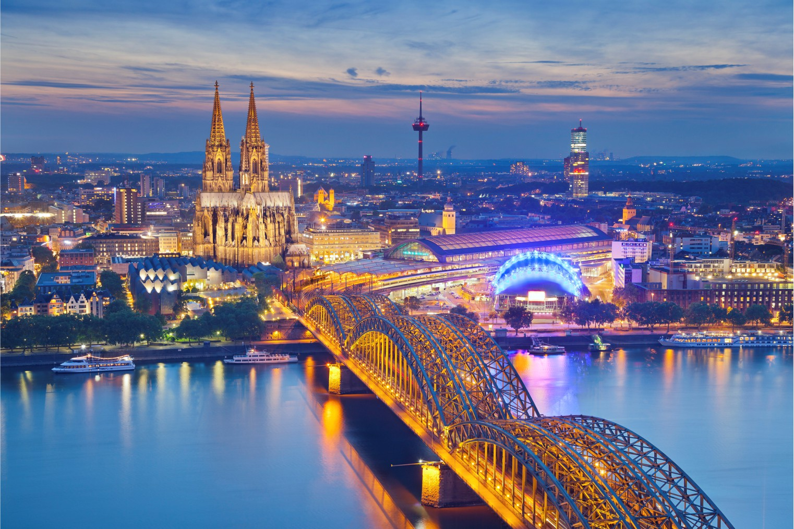
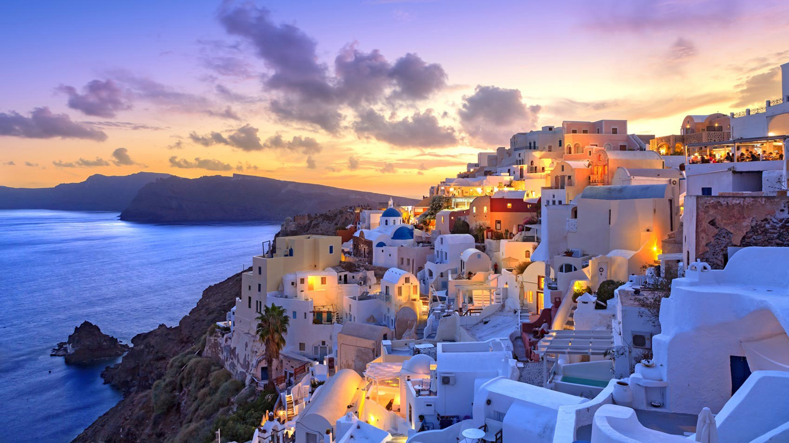
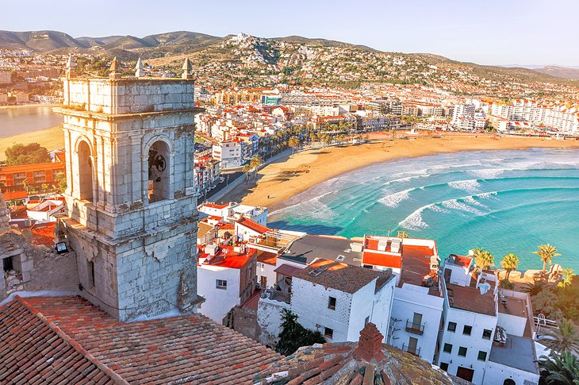

Dubrovnik
MMMM
Dubrovnik se află în sudul ţării. Este înconjurat de trei insuliţe din arhipeleagul Elafiti, Lopud, Lokrum și Koločep, fiind situat în apropiere de Trsten şi Orasac. A fost întemeiat în secolul al VII-lea, însă în secolul al XVII-lea a ars până la temelii. După incendiu oraşul a fost din nou ridicat, iar arhitectura folosită a fost cea în stil baroc. Fiind inclus pe lista Patrimoniului Mondial UNESCO, întregul oraş este un adevărat muzeu. Cele mai importante monumente culturale sunt Palatul Rectorului, zidurile orașului, Lovrijenac, Columna lui Orlando, Cetatea Sv. Ivan și multe altele. De-a lungul promenadei Stradun veți găsi tot ce își poate dori un turist, de la magazine cu suveniruri până la numeroase restaurante. Noaptea, Stradun se transformă în locul principal pentru distracție și petreceri nocturne.
MMMM
De la savoarea, arta si romantismul Parisului la grandorea Alpilor si frumoasele castele de pe Valea Loarei, o vizita in Franta iti va furniza amintiri pentru o viata. Franta este o tara a marilor contraste, oferind o varietate nesfarsita de destinatii turistice, o mare diversitate geografica, gastronomica si climatica, pe langa bogatia patrimoniului cultural si artistic. Daca adaugam facilitatile de acces, infrastructura turistica si de transport foarte bine dezvoltate, devine mai usor de inteles de ce un mare procent de francezi isi petrec vacantele acasa si isi numesc cu mandrie tara „La Belle France”
MMMM
Berlinul este cu siguranță un oraș încărcat de istorie și unul dintre cele mai populare locuri de vizitat în Germania. După modelul Acropolei din Atena și construită pentru regele Frederic William al II-lea în 1791, monumentala Poarta Brandenburg din gresie din cartierul Mitte din Berlin a fost prima structură neoclasică a orașului.
MMMM
O tara cu o cultura si o istorie care a influentat dezvoltarea intregii omeniri, Grecia este, fara doar si poate, o destinatie care trebuie bifata macar o data in viata. Daca, insa, analizezi cate iti ofera, poti descoperi ca un singur sejur nu este suficient pentru a te bucura de tot ce are de oferit ea. Arhitectura, plajele, mancarea si ospitalitatea grecilor sunt motivele pentru care in aceasta tara ajung intr-un singur an peste 30 de milioane de turisti.
MMMM
Italia este o destinație ce ne uimește de fiecare dată cu priveliștile sale de vis, îmbinând cu succes frumusețea mării și a plajelor nisipoase acompaniate de grandoarea muntelui, ce înconjoară falnic zonele de relaxare. Atât pentru istoria sa de capitală a unei mari părți a Europei antice, cât și pentru rolul său actual de unul dintre cele mai vibrante orașe ale Europei, pentru majoritatea turiștilor care călătoresc în Italia, Roma se află în fruntea listei celor mai apreciate locuri de vizitat în Europa. Relicvele străvechilor sale glorii – Colosseumul, Forumul, Panteonul, Calea Appiană și Dealul Palatin – se confruntă cu imensele bogății ale Vaticanului ca atracții de top.
MMMM
Nicio vizita in Olanda nu este completa fara o trecere prin capitala tarii, Amsterdam; in tot cazul tara lalelelor abunda in locatii care mai de care mai atragatoare. De la clasicele mori de vant si magnificele campuri cu flori pana la centrele istorice ale oraselor, impanzite de muzee si atractii turistice, Olanda este o destinatie care ofera extrem de multe celor care vin pana aici. Cu peste 150 de cladiri monumentale fabuloase si la fel de multe poduri, Amsterdam le ofera turistilor posibilitatea de a-si petrece o mare parte din timp explorand excentricitatile si muzeele fantastice care impanzesc cei aproape 100 de kilometri de canale din oras. Casa Annei Frank si Muzeul Rijksmuseum sunt cele mai populare atractii turistice, in timp ce zona Prinsengracht este una dintre cele mai bune locatii pentru cumparaturi, admirarea vitrinelor, vizitarea pub-urilor si explorarea coffee shop-urilor din Amsterdam.
MMMM
Spania este o țară spectaculoasă din Europa de Sud și una dintre cele mai populare destinații turistice din Europa. De la istorie și artă până la soare, mare și viață de noapte și chiar și mâncare cum nu găsești în multe locuri din lume, Spania oferă experiențe pe toate gusturile. În plus, există nenumărate obiective turistice care merită văzute. Amplasarea geografică a Spaniei, litoralurile, peisajele diverse, patrimoniul istoric, cultura vibrantă și infrastructura excelentă au făcut din industria turistică internațională a țării una dintre cele mai mari din lume.
Croatia

Franta

Germania

Grecia

Italia

Olanda

Spania
